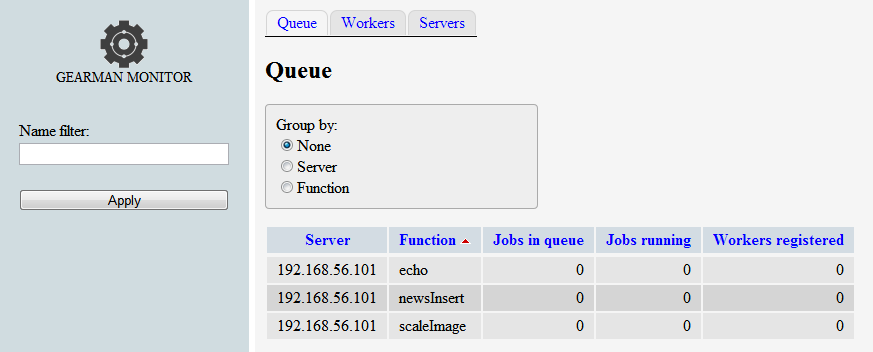

Gearman（三）¶
2015-09-06 15:29
监控工具：Gearman-Monitor¶
Gearman-Monitor是使用PHP实现的Gearman Servers的监控工具。Github仓库在此。
-
首先准备好PHP环境和一个Apache服务器。我把它装在本机上，环境是64位的Win7。采用的PHP环境是PHP 5.5.29，Web Server是Apache 2.4.12。
-
将下载的Gearman-Monitor解压至apache的
htdocs，启动apache，打开http://127.0.0.1/Gearman-Monitor/index.php，出现如下提示。
Net_Gearman package not found!
You can get it at http://pear.php.net/package/Net_Gearman/ or install by pear:
pear install Net_Gearman
原因是Gearman-Monitor需要基于pear的Net_Gearman包。Net_Gearman的下载地址在此。Net_Gearman的使用方法有两种，一是直接将Net_Gearman包下的Net文件夹copy到PHP的根目录下（另一说是PHP的lib目录下的PHP文件夹下），这种方法没有试验过。二是安装pear，执行pear install Net_Gearman-0.2.3即可。下面采用第二种方式安装。
- 安装pear
为防止安装时出现权限问题，以管理员身份打开CMD。先下载http://pear.php.net/go-pear.phar文件到PHP根目录下，然后执行：
出现提示：
直接Enter，采用默认system。
Below is a suggested file layout for your new PEAR installation. To
change individual locations, type the number in front of the
directory. Type 'all' to change all of them or simply press Enter to
accept these locations.
1. Installation base ($prefix) : D:\twen\php-5.5.29
2. Temporary directory for processing : D:\twen\php-5.5.29\tmp
3. Temporary directory for downloads : D:\twen\php-5.5.29\tmp
4. Binaries directory : D:\twen\php-5.5.29
5. PHP code directory ($php_dir) : D:\twen\php-5.5.29\pear
6. Documentation directory : D:\twen\php-5.5.29\docs
7. Data directory : D:\twen\php-5.5.29\data
8. User-modifiable configuration files directory : D:\twen\php-5.5.29\cfg
9. Public Web Files directory : D:\twen\php-5.5.29\www
10. Tests directory : D:\twen\php-5.5.29\tests
11. Name of configuration file : C:\Windows\pear.ini
12. Path to CLI php.exe : D:\twen\php-5.5.29
1-12, 'all' or Enter to continue:
直接Enter，接着会出现一些警告，例如：
Beginning install...
PHP Warning: date(): It is not safe to rely on the system's timezone settings. You are *required* to use the date.timez
one setting or the date_default_timezone_set() function. In case you used any of those methods and you are still getting
this warning, you most likely misspelled the timezone identifier. We selected the timezone 'UTC' for now, but please se
t date.timezone to select your timezone. in phar://D:/twen/php-5.5.29/go-pear.phar/PEAR/Registry.php on line 1012
因为安装PHP环境是我没有设置时区，这里先忽略。
Configuration written to C:\Windows\pear.ini...
Initialized registry...
Preparing to install...
installing phar://D:/twen/php-5.5.29/go-pear.phar/PEAR/go-pear-tarballs/Archive_Tar-1.3.12.tar...
installing phar://D:/twen/php-5.5.29/go-pear.phar/PEAR/go-pear-tarballs/Console_Getopt-1.3.1.tar...
installing phar://D:/twen/php-5.5.29/go-pear.phar/PEAR/go-pear-tarballs/PEAR-1.9.5.tar...
installing phar://D:/twen/php-5.5.29/go-pear.phar/PEAR/go-pear-tarballs/Structures_Graph-1.0.4.tar...
installing phar://D:/twen/php-5.5.29/go-pear.phar/PEAR/go-pear-tarballs/XML_Util-1.2.3.tar...
install ok: channel://pear.php.net/Archive_Tar-1.3.12
install ok: channel://pear.php.net/Console_Getopt-1.3.1
install ok: channel://pear.php.net/Structures_Graph-1.0.4
install ok: channel://pear.php.net/XML_Util-1.2.3
install ok: channel://pear.php.net/PEAR-1.9.5
PEAR: Optional feature webinstaller available (PEAR's web-based installer)
PEAR: Optional feature gtkinstaller available (PEAR's PHP-GTK-based installer)
PEAR: Optional feature gtk2installer available (PEAR's PHP-GTK2-based installer)
PEAR: To install optional features use "pear install pear/PEAR#featurename"
******************************************************************************
WARNING! The include_path defined in the currently used php.ini does not
contain the PEAR PHP directory you just specified:
<D:\twen\php-5.5.29\pear>
If the specified directory is also not in the include_path used by
your scripts, you will have problems getting any PEAR packages working.
Would you like to alter php.ini <D:\twen\php-5.5.29\php.ini>? [Y/n] : Y
选择Y，这里增加pear配置到php.ini。
php.ini <D:\twen\php-5.5.29\php.ini> include_path updated.
Current include path : .;C:\php\pear
Configured directory : D:\twen\php-5.5.29\pear
Currently used php.ini (guess) : D:\twen\php-5.5.29\php.ini
Press Enter to continue:
** WARNING! Old version found at D:\twen\php-5.5.29, please remove it or be sure to use the new d:\twen\php-5.5.29\pear.
bat command
The 'pear' command is now at your service at d:\twen\php-5.5.29\pear.bat
** The 'pear' command is not currently in your PATH, so you need to
** use 'd:\twen\php-5.5.29\pear.bat' until you have added
** 'D:\twen\php-5.5.29' to your PATH environment variable.
Run it without parameters to see the available actions, try 'pear list'
to see what packages are installed, or 'pear help' for help.
For more information about PEAR, see:
http://pear.php.net/faq.php
http://pear.php.net/manual/
Thanks for using go-pear!
* WINDOWS ENVIRONMENT VARIABLES *
For convenience, a REG file is available under D:\twen\php-5.5.29PEAR_ENV.reg .
This file creates ENV variables for the current user.
Double-click this file to add it to the current user registry.
至此pear安装完成，执行pear list，列出已安装的包。说明安装成功。
D:\twen\php-5.5.29>pear list
INSTALLED PACKAGES, CHANNEL PEAR.PHP.NET:
=========================================
PACKAGE VERSION STATE
Archive_Tar 1.3.12 stable
Console_Getopt 1.3.1 stable
PEAR 1.9.5 stable
Structures_Graph 1.0.4 stable
XML_Util 1.2.3 stable
- 安装Net_Gearman
7.再次刷新http://127.0.0.1/Gearman-Monitor/index.php。

至此，Gearman-Monitor安装完成。
注：配置Gearman-Monitor只需配置_config.php,我的配置如下：
$i = 0;
$cfgServers = array();
$cfgServers[$i]['address'] = '192.168.56.101:4730';
$cfgServers[$i]['name'] = '192.168.56.101';
++ $i;
/** 多个Server配置 **/
// $cfgServers[$i]['address'] = '192.168.56.102:4730';
// $cfgServers[$i]['name'] = '192.168.56.102';
// ++ $i;